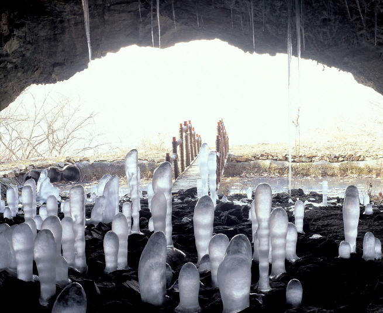

보덕굴

주요특징 및 설명
유형: 석굴
위치: 충북 제천시 한수면 복평리 산14일원
주요 특징
보덕굴은 월악산 하봉에서 북서쪽으로 형성된 석회암 자연
동굴이다. 신라 시대 왕리굴이라 불리다가 후대에
보덕굴이라고 명명되었다.
1986년 보덕암의 대웅전 신축과 함께 개방되었다. 석굴의
길이는 약 32m로 안쪽에서 최대 너비는 약 14m에 이르며
가장 높은 곳은 약 8m에 이른다.